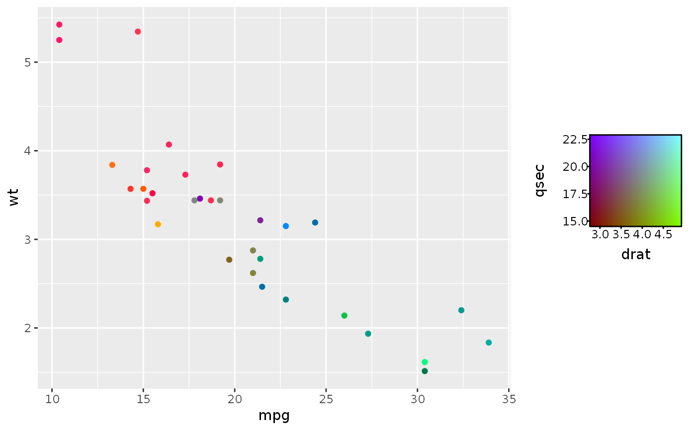
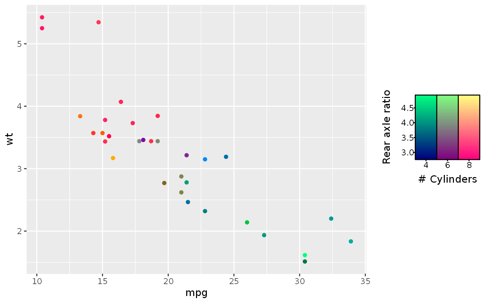
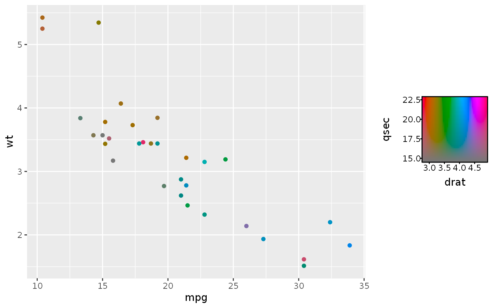

guide_colourrect.RdThe colour rectangle guide is a specialised guide for chromatic scales. It maps two channels of a chromatic scales along the x and y axes and renders a rectangle raster displaying the colours.
guide_colourrect( title = waiver(), title.position = NULL, title.theme = NULL, title.hjust = NULL, title.vjust = NULL, label = TRUE, label.position = NULL, label.theme = NULL, label.hjust = NULL, label.vjust = NULL, check.overlap = TRUE, rectwidth = NULL, rectheight = NULL, nbin = 50, raster = TRUE, frame.colour = "black", frame.linewidth = 0.5, frame.linetype = 1, ticks = TRUE, ticks.colour = "black", ticks.linewidth = 0.5, default.unit = "line", channels = "auto", order = 0, available_aes = c("colour", "color", "fill"), ... ) guide_colorrect( title = waiver(), title.position = NULL, title.theme = NULL, title.hjust = NULL, title.vjust = NULL, label = TRUE, label.position = NULL, label.theme = NULL, label.hjust = NULL, label.vjust = NULL, check.overlap = TRUE, rectwidth = NULL, rectheight = NULL, nbin = 50, raster = TRUE, frame.colour = "black", frame.linewidth = 0.5, frame.linetype = 1, ticks = TRUE, ticks.colour = "black", ticks.linewidth = 0.5, default.unit = "line", channels = "auto", order = 0, available_aes = c("colour", "color", "fill"), ... )
| title | A character string or expression indicating the title of guide.
If |
|---|---|
| title.position | A character string indicating the position of a title. One of "top" (default for a vertical guide), "bottom", "left" (default for a horizontal guide), or "right." |
| title.theme | A theme object for rendering the title text. Usually the
object of |
| title.hjust | A number specifying horizontal justification of the title text. |
| title.vjust | A number specifying vertical justification of the title text. |
| label | logical. If |
| label.position | A character string indicating the position of a label. One of "top", "bottom" (default for horizontal guide), "left", or "right" (default for vertical guide). |
| label.theme | A theme object for rendering the label text. Usually the
object of |
| label.hjust | A numeric specifying horizontal justification of the label text. |
| label.vjust | A numeric specifying vertical justification of the label text. |
| check.overlap | If |
| rectwidth, rectheight | A |
| nbin | A numeric specifying the number of bins for drawing the colourbar. A smoother colourbar results from a larger value. |
| raster | A logical. If |
| frame.colour | A string specifying the colour of the frame
drawn around the bar. If |
| frame.linewidth | A numeric specifying the width of the frame drawn around the bar. |
| frame.linetype | A numeric specifying the linetype of the frame drawn around the bar. |
| ticks | A logical specifying if tick marks on the colourbar should be visible. |
| ticks.colour | A string specifying the colour of the tick marks. |
| ticks.linewidth | A numeric specifying the width of the tick marks. |
| default.unit | A character string indicating |
| channels | A |
| order | positive integer less than 99 that specifies the order of this guide among multiple guides. This controls the order in which multiple guides are displayed, not the contents of the guide itself. If 0 (default), the order is determined by a secret algorithm. |
| available_aes | A vector of character strings listing the aesthetics for which a colourbar can be drawn. |
| ... | ignored. |
A guide_colourrect S3 object.
Other guides for chromatic scales:
guide_chromatic(),
guide_colourbar2(),
guide_colourcube()
# Make basic plot g <- ggplot(mtcars, aes(mpg, wt)) + geom_point(aes(colour = rgb_spec(as.factor(cyl), drat, qsec))) # Choose the channels g + guides(colour = guide_colourrect(channels = c("g", "b")))# Titles can take length 2 for the x- and y-axis. g + guides( colour = guide_colourrect(title = c("# Cylinders", "Rear axle ratio")) )# If only 2 channels are specified, `guide_colourrect()` becomes the guide ggplot(mtcars, aes(mpg, wt)) + geom_point(aes(colour = hcl_spec(drat, qsec)))